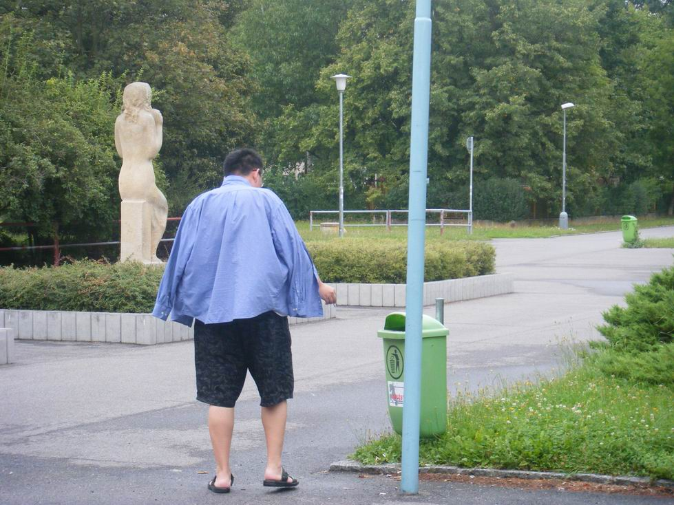

AT第十轮
#1 AT第十轮作者：无尽 发表时间：2009-8-12 21:51:08
Kozhin Mikhail - Purk Andry
Karasyev Maxim - 曹冬
Sushkov Vladimir - 小野孝之
吴镝 - 中村茂
Taimla Tunnet - 冈部宽
Nykl Ondřej - 陈科翰
#2 Re:AT第十轮作者：南郭先生 发表时间：2009-8-12 21:56:23
几点开始??#3 Re:AT第十轮作者：无尽 发表时间：2009-8-12 21:57:10
马上开始了#4 Re:AT第十轮作者：密室里的蜡烛 发表时间：2009-8-12 22:05:38
吼吼 占位#5 Re:AT第十轮作者：水月 发表时间：2009-8-12 22:06:24
占位。。。。。。卖烧饼～#6 Re:AT第十轮作者：启蒙 发表时间：2009-8-12 22:06:30
今天晚上爽呆了 吴镝 - 中村茂 两位世界冠军之间的对决！#7 Re:AT第十轮作者：水月 发表时间：2009-8-12 22:09:59
中村最后一轮还要对付坦克。。。#8 Re:AT第十轮作者：周光乐 发表时间：2009-8-12 22:10:17
呵呵呵，差距啊！！！#9 Re:AT第十轮作者：密室里的蜡烛 发表时间：2009-8-12 22:10:32
嘿嘿~ 那个卖烧饼谁最有名啊哈？#10 Re:AT第十轮作者：时景如飘风 发表时间：2009-8-12 22:13:23
占座看帖，求购钛合金F5~~#11 Re:AT第十轮作者：无尽 发表时间：2009-8-12 22:18:23
=======上图对应的爱五子棋谱代码如下，以便你拆解：========
h8h9h7h6
======================================================
中村 黑 - 大鱼 白
#12 Re:AT第十轮作者：清缘 发表时间：2009-8-12 22:18:48
中村砍掉大鱼,和了坦克...冠军
然后苏切砍掉日本人,然后被曹冬干掉。。。延续千年老二命
［ 无尽 于 2009-8-12 22:22:22 时花20金币送鲜花一朵］
虽然我也一厢情愿
［ 雨一直下 于 2009-8-12 22:27:05 时花20金币送鲜花一朵］
疯子和偶想的一样哈~~
#13 Re:AT第十轮作者：无尽 发表时间：2009-8-12 22:19:33
=======上图对应的爱五子棋谱代码如下，以便你拆解：========
h8h9h10i10g9f8
======================================================
小野 黑 - Sushkov 白
小野肯定不会必胜... 然后白超优...
#14 Re:Re:AT第十轮作者：极地剑客 发表时间：2009-8-12 22:24:34
围观比赛进程#15 Re:AT第十轮作者：无尽 发表时间：2009-8-12 22:24:49
=======上图对应的爱五子棋谱代码如下，以便你拆解：========
h8h9h7h6g6i8j7g7j5
======================================================
中村 黑 居然演变成松月二打 感觉中村想赢不容易...
感觉中村想赢不容易...
#16 Re:AT第十轮作者：棋情 发表时间：2009-8-12 22:24:50
 压大鱼一票!!!
压大鱼一票!!!#17 Re:AT第十轮作者：无尽 发表时间：2009-8-12 22:25:34
我的帖子比棋情快一秒
#18 Re:AT第十轮作者：无尽 发表时间：2009-8-12 22:27:36
=======上图对应的爱五子棋谱代码如下，以便你拆解：========
h8h9h10i10g9f8i7j6g11
======================================================
小野走对了耶 不过难点在后面 难道知道如何必胜 中村默契和棋？ Orz
#19 Re:AT第十轮作者：yoda 发表时间：2009-8-12 22:29:18
感觉苏切科夫有点玄。中村5的位置是策略。
#20 Re:AT第十轮作者：淡红的秋樱 发表时间：2009-8-12 22:30:24
18楼之后黑棋有多个优势走法，虽然不能必胜的说。#21 Re:AT第十轮作者：雨一直下 发表时间：2009-8-12 22:30:36
小野和苏切和了吧然后冬瓜砍掉苏切!
中村VS大鱼, 不发表意见了,...顺其自然~~
#22 Re:AT第十轮作者：屏蔽 发表时间：2009-8-12 22:31:32
中村的5啊……看大鱼的了
还有Sushkov是不是看中村的对手屡屡漏杀，自己也想尝试一下……
#23 Re:AT第十轮作者：隐藏菜系 发表时间：2009-8-12 22:32:20
莫非棋情大师有秘密研究？？？？？

#24 Re:AT第十轮作者：无尽 发表时间：2009-8-12 22:33:39
本次比赛仍然悬念十足啊 源于中村第二轮的意外告负
源于中村第二轮的意外告负#25 Re:AT第十轮作者：无尽 发表时间：2009-8-12 22:34:54
=======上图对应的爱五子棋谱代码如下，以便你拆解：========
h8h9h10i10g9f8i7j6g11f10f12i9
======================================================
小野 黑 - Sushkov 白
倒。。。。。。 这样行嘛？ yoda老师
yoda老师
#26 Re:AT第十轮作者：屏蔽 发表时间：2009-8-12 22:36:06
=======上图对应的爱五子棋谱代码如下，以便你拆解：========
h8h9h10i10g9f8i7j6g11f10f11
======================================================
不是这样必胜么？（跪求yoda大师讲解
#27 Re:AT第十轮作者：无尽 发表时间：2009-8-12 22:37:43
11-f7
#28 Re:AT第十轮作者：无尽 发表时间：2009-8-12 22:39:55
唉 我还是明早看结果吧
#29 Re:AT第十轮作者：yoda 发表时间：2009-8-12 22:40:07
 小野太让人失望了。这棋估计和都没戏。。。 7f黑必胜。
小野太让人失望了。这棋估计和都没戏。。。 7f黑必胜。［ 失落刀 于 2009-8-13 7:32:14 时花20金币送鲜花一朵］
#30 Re:AT第十轮作者：无尽 发表时间：2009-8-12 22:42:52
估计大鱼至少不会输了#31 Re:AT第十轮作者：百医天使 发表时间：2009-8-12 22:43:46
这个有地毯必胜了吧
#32 Re:Re:AT第十轮作者：屏蔽 发表时间：2009-8-12 22:48:09
引用：
原文由 无尽 发表于 2009-8-12 22:42:52 :
估计大鱼至少不会输了
何故？求解。
#33 Re:Re:AT第十轮作者：日出333 发表时间：2009-8-12 22:52:46
引用：
原文由 无尽 发表于 2009-8-12 22:42:52 :
估计大鱼至少不会输了
那中村？
#34 Re:AT第十轮作者：无尽 发表时间：2009-8-12 22:52:58
刚回头看错了-.- 到白走 以为小野VCT...
这盘没了///
#35 Re:Re:Re:AT第十轮作者：无尽 发表时间：2009-8-12 22:54:06
引用：感觉而已
原文由 屏蔽 发表于 2009-8-12 22:48:09 :引用：
原文由 无尽 发表于 2009-8-12 22:42:52 :
估计大鱼至少不会输了何故？求解。

#36 Re:AT第十轮作者：水月 发表时间：2009-8-12 22:55:08
小野同学搞什么啊。。。。。。。#37 Re:AT第十轮作者：潇洒 发表时间：2009-8-12 23:01:21
大鱼和中村和了 ，然后Sushkov冠军。。嘿嘿。。
#38 Re:AT第十轮作者：淡红的秋樱 发表时间：2009-8-12 23:05:43
感觉大鱼不乐观，他们的战线似乎还长。#39 Re:AT第十轮作者：魔法少年 发表时间：2009-8-12 23:06:15
中村看来研究过啊，知道这个局面黑正好没杀！依然是外围战术！无敌的警报没有解除。。。#40 Re:AT第十轮作者：yoda 发表时间：2009-8-12 23:09:48
21有深意的一手。#41 Re:AT第十轮作者：南郭先生 发表时间：2009-8-12 23:15:13
哪里有直播?
#42 Re:AT第十轮作者：潇洒 发表时间：2009-8-12 23:16:44
http://www.renju.net/media/games.php?gameid=14158#43 Re:AT第十轮作者：舍露里 发表时间：2009-8-12 23:20:48
 大鱼上午开始发烧，但愿能挺住
大鱼上午开始发烧，但愿能挺住#44 Re:AT第十轮作者：没事摆石子玩 发表时间：2009-8-12 23:22:59
为了荣誉而战! 佩服#45 Re:AT第十轮作者：魔法少年 发表时间：2009-8-12 23:27:25
白22分段黑左右，很好的想法啊！！#46 Re:AT第十轮作者：聂淼 发表时间：2009-8-12 23:31:03
大鱼这盘应该有胜的机会
#47 Re:AT第十轮作者：聂淼 发表时间：2009-8-12 23:32:48
大鱼只要赢了这盘，则一切之颜面尽可挽回［ 潇洒 于 2009-8-12 23:34:30 时花20金币送鲜花一朵］
#48 Re:AT第十轮作者：淡红的秋樱 发表时间：2009-8-12 23:33:49
我猜23黑棋应该从右边开始强攻了#49 Re:AT第十轮作者：烟雨淋晨尘 发表时间：2009-8-12 23:38:03
哎，这回安多要是也在，局面再乱点就好看了，苏切想争个2那估计都费劲了。
#50 Re:AT第十轮作者：时景如飘风 发表时间：2009-8-12 23:38:03
23把22和2那个立2盖住怎么样？慢慢做#51 Re:Re:AT第十轮作者：aabb 发表时间：2009-8-12 23:38:08
引用：
原文由 聂淼 发表于 2009-8-12 23:32:48 :
大鱼只要赢了这盘，则一切之颜面尽可挽回［ 潇洒 于 2009-8-12 23:34:30 时花20金币送鲜花一朵］

#52 Re:AT第十轮作者：暴力连珠 发表时间：2009-8-12 23:46:26
深感大鱼要挂#53 Re:AT第十轮作者：aabb 发表时间：2009-8-12 23:53:59
就局面来说。。黑没有特别地优。。。就吴的状态来说。。。就不知道了。
#54 Re:AT第十轮作者：周光乐 发表时间：2009-8-12 23:56:26
白也不是特别的优吧？
#55 Re:AT第十轮作者：淡红的秋樱 发表时间：2009-8-12 23:59:24
睡觉啦，感觉中村茂的行棋线路有问题，如果25开始不能速胜，说不定就输给大鱼了。#56 Re:AT第十轮作者：歇菜了 发表时间：2009-8-13 0:00:56
=======上图对应的爱五子棋谱代码如下，以便你拆解：========
h8h9i10i8j9j10g7k8j7k9l8i7
======================================================
曹冬这盘感觉挺好，对手9手不攻啊
#57 Re:AT第十轮作者：魔法少年 发表时间：2009-8-13 0:02:20
=======上图对应的爱五子棋谱代码如下，以便你拆解：========
h8h9i10i8j9j10g7k8j7k9l8i7i5
======================================================
13手在这里的话，黑优吧？？
#58 Re:AT第十轮作者：记忆童年 发表时间：2009-8-13 0:12:50
曹那局20=i11，好象可以拆出必胜，当然这只是理论
#59 Re:AT第十轮作者：鬃毛 发表时间：2009-8-13 0:15:52
大鱼的24 感觉白要挂了啊#60 Re:AT第十轮作者：歇菜了 发表时间：2009-8-13 0:18:05
=======上图对应的爱五子棋谱代码如下，以便你拆解：========
h8h9i10i8j9j10g7k8g10
======================================================
9 手这样白防不住了
#61 Re:AT第十轮作者：罔两 发表时间：2009-8-13 0:23:57
大鱼这盘不乐观啊！ 这个松月14记得是中村和adon世纪大战 中村下出来的吧！（中村应该是对这个14很有感觉！）个人感觉中村不会强攻的。局面感觉黑很有味道啊！
22并没有完全分断黑！
#62 Re:AT第十轮作者：魔法少年 发表时间：2009-8-13 0:24:28
=======上图对应的爱五子棋谱代码如下，以便你拆解：========
h8h9i10i8j9j10g7k8g10i6
======================================================
有杀么？
#63 Re:AT第十轮作者：夜火无痕 发表时间：2009-8-13 0:26:37
有的阿魔，刚才小薛随便扔了手就杀了#64 Re:AT第十轮作者：魔法少年 发表时间：2009-8-13 0:28:52
这么弓虽。。。怎么弄啊？#65 Re:AT第十轮作者：慕容晓文 发表时间：2009-8-13 0:29:29
呵呵~~~~
MAXIM下的太弱了
#66 Re:AT第十轮作者：夜火无痕 发表时间：2009-8-13 0:29:44
恩，阿朱也扫了眼，小元防都没防住#67 Re:AT第十轮作者：鬼冢弹间 发表时间：2009-8-13 0:30:04
小野必胜了。。 不过估计他走不出#68 Re:AT第十轮作者：aabb 发表时间：2009-8-13 0:30:50
为什么看不到CHEN的对局？#69 Re:AT第十轮作者：魔法少年 发表时间：2009-8-13 0:30:52
我靠，我得去收菜了，否则都被你们拔没了。。。#70 Re:AT第十轮作者：罔两 发表时间：2009-8-13 0:30:57
霸王丸 你扫了几眼 哈哈
#71 Re:AT第十轮作者：慕容晓文 发表时间：2009-8-13 0:31:30
04年，溪月的这个7、9杀过大胖#72 Re:AT第十轮作者：aabb 发表时间：2009-8-13 0:32:04
原来已经被秒杀了。。#73 Re:AT第十轮作者：夜火无痕 发表时间：2009-8-13 0:32:30
我一回头软件就全C了就没我什么事情了
#74 Re:AT第十轮作者：周光乐 发表时间：2009-8-13 0:32:44
18的时候黑必胜了？#75 Re:AT第十轮作者：聂淼 发表时间：2009-8-13 0:33:25
一直不更新，是不是转播的人吃饭去了#76 Re:AT第十轮作者：魔法少年 发表时间：2009-8-13 0:35:30
那我也吃个饭先~~~#77 Re:AT第十轮作者：歇菜了 发表时间：2009-8-13 0:35:44
=======上图对应的爱五子棋谱代码如下，以便你拆解：========
h8h9i10i8j9j10g7k8g10i6h5
======================================================
这样杀了，黑可以往下跳3做V的
#78 Re:AT第十轮作者：灯塔连珠 发表时间：2009-8-13 0:38:24
大鱼26-E11，我的看法
#79 Re:Re:AT第十轮作者：罔两 发表时间：2009-8-13 0:38:49
。。。还是你厉害~~ 你一眼都不要扫就杀了！！#80 Re:AT第十轮作者：周光乐 发表时间：2009-8-13 0:39:46
直接杀~~
#81 Re:AT第十轮作者：灯塔连珠 发表时间：2009-8-13 0:40:40
曹东已经优势了~~#82 Re:AT第十轮作者：周光乐 发表时间：2009-8-13 0:41:27
我们都很无聊#83 Re:Re:AT第十轮作者：罔两 发表时间：2009-8-13 0:41:43
猪头！
=======上图对应的爱五子棋谱代码如下，以便你拆解：========
h8h9h7h6g6i8j7g7j5f8e9f7g8i6j6j4i5i7i9h4f6h10e10e7d6e11f11
======================================================
这样你会很痛苦哟 主要你没带一点牵制 本来局部就没杀的 你没带牵制防 等于就是让黑多走一手差不多
#84 Re:AT第十轮作者：周光乐 发表时间：2009-8-13 0:43:13
下成这样了吗
#85 Re:AT第十轮作者：周光乐 发表时间：2009-8-13 0:44:58
26在27位啊#86 Re:AT第十轮作者：舍露里 发表时间：2009-8-13 0:45:45
大鱼26F11，中村擦汗长考中#87 Re:AT第十轮作者：罔两 发表时间：2009-8-13 0:50:17
=======上图对应的爱五子棋谱代码如下，以便你拆解：========
h8h9h7h6g6i8j7g7j5f8e9f7g8i6j6j4i5i7i9h4f6h10e10e7d6f11
======================================================
这个局部 如果选择交换，黑能拿到先手 那局面应该黑有利吧！
#88 Re:AT第十轮作者：水月 发表时间：2009-8-13 0:51:14
白棋局部4个冲四，而且有VCF，中村不乐观～#89 Re:AT第十轮作者：舍露里 发表时间：2009-8-13 0:55:40
目前中村仍在长考中，左手托腰，右手托眼镜，神情凝重而平静
剩余时间为59（大鱼）：50（中村）
#90 Re:AT第十轮作者：千羽鹤 发表时间：2009-8-13 0:56:23
我觉得这样的应该难不倒中村。。。#91 Re:AT第十轮作者：歇菜了 发表时间：2009-8-13 0:56:59
=======上图对应的爱五子棋谱代码如下，以便你拆解：========
h8h9i10i8j9j10g7k8j7k9l8i7i5h6j8j6k6k11k10h12j12g11
======================================================
曹冬必胜了啊
#92 Re:AT第十轮作者：夜火无痕 发表时间：2009-8-13 0:57:33
曹东形式不错#93 Re:AT第十轮作者：没事摆石子玩 发表时间：2009-8-13 0:57:46
27E11活3应该是最好手段,白要挂那样#94 Re:AT第十轮作者：舍露里 发表时间：2009-8-13 0:58:59
中村冲4了！
此时，大鱼正在外头吸烟
中村的双手同时撑向背后，上身保持挺直
#95 Re:AT第十轮作者：天逸 发表时间：2009-8-13 1:00:41
很可爱的现场直播呀 ：）
#96 Re:AT第十轮作者：舍露里 发表时间：2009-8-13 1:03:45
正如我所预料，大鱼一回来就迅速果断地盖掉了冲4
中村时而左手托下巴，右手托胯
时而双臂交叉放在桌上
时而十指交叉置于头顶
#97 Re:AT第十轮作者：水月 发表时间：2009-8-13 1:04:44
嗯。。。我个人认为盖掉冲四是局部的最强防。#98 Re:AT第十轮作者：罔两 发表时间：2009-8-13 1:05:16
果断迅速的盖掉了冲四！！！ 很经典的描述啊~~#99 Re:AT第十轮作者：潇洒 发表时间：2009-8-13 1:05:54
说不定大鱼还真的把中村干下去。。
#100 Re:AT第十轮作者：军团云淡 发表时间：2009-8-13 1:06:01
=======上图对应的爱五子棋谱代码如下，以便你拆解：========
h8h9h7h6g6i8j7g7j5f8e9f7g8i6j6j4i5i7i9h4f6h10e10e7d6f11e11e12g10h11f9d11c6e6d7e8d5g9i11e4e5d4j8j9c5
======================================================
#101 Re:AT第十轮作者：潇洒 发表时间：2009-8-13 1:13:36
=======上图对应的爱五子棋谱代码如下，以便你拆解：========
h8h9h7h6g6i8j7g7j5f8e9f7g8i6j6j4i5i7i9h4f6h10e10e7d6f11f9d11c6e6d7
======================================================
#102 Re:AT第十轮作者：yoda 发表时间：2009-8-13 1:16:06
这样定型黑没什么机会了。
#103 Re:AT第十轮作者：罔两 发表时间：2009-8-13 1:17:22
不是太明白中村这样的交换，感觉这样冲活后 黑全盘就断了呀！
#104 Re:AT第十轮作者：舍露里 发表时间：2009-8-13 1:18:00
中村落子了……跳冲一个四，跳活一个三，神色顿时轻松
由于低烧而虚弱的大鱼披着从曹冬地方夺过来的浅蓝外套，淡定地扫视全盘，上下求索
#105 Re:AT第十轮作者：罔两 发表时间：2009-8-13 1:20:02
中村这两手 确实不太明白 这棋感觉黑好像最好就是和了吧！#106 Re:AT第十轮作者：舍露里 发表时间：2009-8-13 1:20:29
现场后援团场外音：大鱼咋不开瑞星呢
殷老师点评：日本老棋手对松月肯定烂熟于心
#107 Re:AT第十轮作者：罔两 发表时间：2009-8-13 1:22:49
防中间白肯定死了 冲了后 感觉白很舒服~~~#108 Re:AT第十轮作者：潇洒 发表时间：2009-8-13 1:23:12
曹冬那盘白有VCT。。#109 Re:AT第十轮作者：舍露里 发表时间：2009-8-13 1:27:01
大鱼挡在了中间！
中村低吟了一声： so de su ga!
随后从喉咙深处发出了一声低吼，荡气回肠
#110 Re:AT第十轮作者：罔两 发表时间：2009-8-13 1:28:40
大鱼档中间了？晕死#111 Re:AT第十轮作者：潇洒 发表时间：2009-8-13 1:28:48
弱弱的问句。。那局日语是什么意思？？
#112 Re:AT第十轮作者：流星叔叔 发表时间：2009-8-13 1:29:18
舍露里MM的解说超一流哈，让人身临其境
大鱼加油！
#113 Re:AT第十轮作者：罔两 发表时间：2009-8-13 1:29:39
曹冬 胜了！！#114 Re:Re:AT第十轮作者：流星叔叔 发表时间：2009-8-13 1:30:56
引用：google了一下，大概是 这样子哈，原来如此哈
原文由 潇洒 发表于 2009-8-13 1:28:48 :弱弱的问句。。那局日语是什么意思？？
#115 Re:Re:AT第十轮作者：罔两 发表时间：2009-8-13 1:31:38
引用：
原文由 舍露里 发表于 2009-8-13 1:27:01 :大鱼挡在了中间！
中村低吟了一声： so de su ga!
随后从喉咙深处发出了一声低吼，荡气回肠
应该是 索噶索噶 吧！ 哈哈 估计是好牛b 好牛b !
#116 Re:AT第十轮作者：没事摆石子玩 发表时间：2009-8-13 1:31:40
不对吧 直播的对局不是挡的中间#117 Re:AT第十轮作者：夜火无痕 发表时间：2009-8-13 1:31:54
MM的意思好像是冲了挡中间。。#118 Re:AT第十轮作者：千羽鹤 发表时间：2009-8-13 1:32:12
=======上图对应的爱五子棋谱代码如下，以便你拆解：========
h8h9h7h6g6i8j7g7j5f8e9f7g8i6j6j4i5i7i9h4f6h10e10e7d6f11f9d11c6e6d7g10e12e11g11e8
======================================================
网上是这样。。。是说36挡中间吧
#119 Re:AT第十轮作者：潇洒 发表时间：2009-8-13 1:33:37
谢谢流星叔叔和罔两解答。。#120 Re:Re:AT第十轮作者：南姑钉子户 发表时间：2009-8-13 1:33:52
引用：
原文由 聂淼 发表于 2009-8-12 23:32:48 :
大鱼只要赢了这盘，则一切之颜面尽可挽回［ 潇洒 于 2009-8-12 23:34:30 时花20金币送鲜花一朵］
我帮你说完 不然就是
#121 Re:AT第十轮作者：舍露里 发表时间：2009-8-13 1:36:45
37之后，大鱼痛苦咂舌
殷老师点评：大师要控死大鱼
#122 Re:AT第十轮作者：启蒙 发表时间：2009-8-13 1:36:56
原文由 聂淼 发表于 2009-8-12 23:32:48 :
大鱼只要赢了这盘，则一切之颜面尽可挽回
----------------
没觉得大鱼有什么丢脸的地方，输赢棋本来很正常的，过程比结果重要，毕竟他拿过一次世界冠军了！
#123 Re:AT第十轮作者：罔两 发表时间：2009-8-13 1:37:08
=======上图对应的爱五子棋谱代码如下，以便你拆解：========
h8h9h7h6g6i8j7g7j5f8e9f7g8i6j6j4i5i7i9h4f6h10e10e7d6f11f9d11c6e6d7g10e12e11g11e8g9
======================================================
37如此应对 是不是最好的手段 这样感觉局面 还有会耗啊~~
#124 Re:AT第十轮作者：舍露里 发表时间：2009-8-13 1:39:27
网上是对的……
中村落的37那颗子是掷地有声，气势压人啊
#125 Re:AT第十轮作者：军团云淡 发表时间：2009-8-13 1:39:49
=======上图对应的爱五子棋谱代码如下，以便你拆解：========
h8h9h7h6g6i8j7g7j5f8e9f7g8i6j6j4i5i7i9h4f6h10e10e7d6f11f9d11c6e6d7g10e12e11g11e8h12f10
======================================================
这样大鱼赢了吧
#126 Re:AT第十轮作者：罔两 发表时间：2009-8-13 1:40:28
中村37实战中这手，拆解是黑挂了~~~
不知道现场是如何
#127 Re:AT第十轮作者：罔两 发表时间：2009-8-13 1:43:32
=======上图对应的爱五子棋谱代码如下，以便你拆解：========
h8h9h7h6g6i8j7g7j5f8e9f7g8i6j6j4i5i7i9h4f6h10e10e7d6f11f9d11c6e6d7g10e12e11g11e8h12f10j8j9b11
======================================================
唯一防吧
#128 Re:AT第十轮作者：魔法少年 发表时间：2009-8-13 1:44:42
白还有杀么？38到D8好吧？#129 Re:AT第十轮作者：军团云淡 发表时间：2009-8-13 1:45:16
中村太牛逼了#130 Re:AT第十轮作者：舍露里 发表时间：2009-8-13 1:48:18
附上现场美图：
#131 Re:AT第十轮作者：千羽鹤 发表时间：2009-8-13 1:49:01
( ⊙o⊙ )哇#132 Re:AT第十轮作者：启蒙 发表时间：2009-8-13 1:49:47
感谢舍露里MM的精彩及时的投递！#133 Re:AT第十轮作者：流星叔叔 发表时间：2009-8-13 1:50:24
 ，终于一睹神的芳容了
，终于一睹神的芳容了
吴迪帅哥咋发烧了呢，要保重身体哈
#134 Re:AT第十轮作者：军团云淡 发表时间：2009-8-13 1:50:31
舍露里是谁啊，真在现场啊#135 Re:AT第十轮作者：天逸 发表时间：2009-8-13 1:54:11
这图看着真的很有感觉的说~~ 呵呵，谢谢舍露里MM的现场报道~~ ：P#136 Re:AT第十轮作者：舍露里 发表时间：2009-8-13 1:56:37
中场抽烟四连拍

#137 Re:AT第十轮作者：四川连珠魂 发表时间：2009-8-13 1:59:06
中村本来是防下来了，但是43手失误，又必败了#138 Re:AT第十轮作者：流星叔叔 发表时间：2009-8-13 2:00:05
这披风，这拖鞋，这背影，这姿势，经典国产007大贤隐于市的翻版哈...
［ 失落刀 于 2009-8-13 10:27:59 时花20金币送鲜花一朵］
［ aabb 于 2009-8-13 11:25:01 时花20金币送鲜花一朵］
#139 Re:AT第十轮作者：潇洒 发表时间：2009-8-13 2:00:13
大鱼VCT了。。战胜神了。。
#140 Re:AT第十轮作者：舍露里 发表时间：2009-8-13 2:00:18
大鱼活了个三，要赢了！#141 Re:AT第十轮作者：夜火无痕 发表时间：2009-8-13 2:01:03
大鱼就差ANDO了#142 Re:AT第十轮作者：舍露里 发表时间：2009-8-13 2:01:15
中村投子了！！！！！！！#143 Re:AT第十轮作者：夜火无痕 发表时间：2009-8-13 2:01:38
#144 Re:AT第十轮作者：潇洒 发表时间：2009-8-13 2:01:44
大鱼为中国棋手争光了。#145 Re:AT第十轮作者：夜火无痕 发表时间：2009-8-13 2:02:13
曹东的对手怎么还没投，在等超时吗#146 Re:AT第十轮作者：潇洒 发表时间：2009-8-13 2:03:17
曹冬也抓了。。今天战绩不错。。HoHo~~#147 Re:AT第十轮作者：流星叔叔 发表时间：2009-8-13 2:03:21
恭喜大鱼帅哥，哈哈，不枉我熬夜这么晚
恭喜恭喜！！！
#148 Re:AT第十轮作者：日出333 发表时间：2009-8-13 2:05:35
早上起来要看看太阳是从哪边出来的~~~~~~~~简直神了
#149 Re:AT第十轮作者：uniwin 发表时间：2009-8-13 2:05:56
今儿个真高兴！！！全谱在哪里看得到？？#150 Re:AT第十轮作者：千羽鹤 发表时间：2009-8-13 2:05:58
额。。。。苏切什么情况了。。。#151 Re:AT第十轮作者：lyx655 发表时间：2009-8-13 2:06:16
#152 Re:AT第十轮作者：舍露里 发表时间：2009-8-13 2:06:39
为了庆祝大鱼战胜中村，我为大家奉上四连拍的后三张
#153 Re:AT第十轮作者：刀刀 发表时间：2009-8-13 2:07:02
苏切应该等着赢了，千年老二的帽子终于摘掉了#154 Re:AT第十轮作者：舍露里 发表时间：2009-8-13 2:07:20
#155 Re:AT第十轮作者：千羽鹤 发表时间：2009-8-13 2:07:45
=======上图对应的爱五子棋谱代码如下，以便你拆解：========
h8h9h7h6g6i8j7g7j5f8e9f7g8i6j6j4i5i7i9h4f6h10e10e7d6f11f9d11c6e6d7g10e12e11g11e8h12f10j8j9b11d5i11g4f4e5e4f5g5h3i2h5h2b5c5e2f3c4
======================================================
全谱
#156 Re:AT第十轮作者：舍露里 发表时间：2009-8-13 2:08:16
#157 Re:Re:AT第十轮作者：流星叔叔 发表时间：2009-8-13 2:08:20
引用：也该人家一回了，呵呵
原文由 刀刀 发表于 2009-8-13 2:07:02 :
苏切应该等着赢了，千年老二的帽子终于摘掉了
#158 Re:AT第十轮作者：千羽鹤 发表时间：2009-8-13 2:09:39
43手。。。不敢相信#159 Re:AT第十轮作者：流星叔叔 发表时间：2009-8-13 2:09:39
，感谢舍露里MM前方的精彩报道
辛苦了，谢谢
#160 Re:AT第十轮作者：时景如飘风 发表时间：2009-8-13 2:09:41
中村的43简直莫名其妙啊。。。就算吴镝底下没V也得补一手啊。。。唉。。。。#161 Re:AT第十轮作者：夜火无痕 发表时间：2009-8-13 2:10:04
睡了,MM辛苦了#162 Re:AT第十轮作者：潇洒 发表时间：2009-8-13 2:10:42
=======上图对应的爱五子棋谱代码如下，以便你拆解：========
h8h9h10i10g9f8i7j6g11f10f12i9j11g12j9i11i12k10h13g13j10j8d11e12g8g7d12e13h11g10f11e11e10f9
======================================================
Sushkov 白
#163 Re:AT第十轮作者：刀刀 发表时间：2009-8-13 2:10:56
中村应该以为吴镝下面连VCT都没有，至少他以为自己能防得住。。。。#164 Re:AT第十轮作者：潇洒 发表时间：2009-8-13 2:13:11
连胜两轮。。大鱼进入状态了撒。。#165 Re:AT第十轮作者：天逸 发表时间：2009-8-13 2:14:44
哈，恭喜大鱼战胜神~~ 虽然有点伤感，但是还是很开心~~
#166 Re:AT第十轮作者：潇洒 发表时间：2009-8-13 2:38:18
=======上图对应的爱五子棋谱代码如下，以便你拆解：========
h8i9i8j8k9k7l6j7j6g9h10h7i7k5g8k6k4l7n7m8n9h5l5i4j5j3g6k2l1g4i6h4f4h3h6f6g5e3f5f3d3e4e2d5
======================================================
Tunnet 赢
#167 Re:AT第十轮作者：南姑钉子户 发表时间：2009-8-13 2:40:08
2科夫也赢了#168 Re:AT第十轮作者：潇洒 发表时间：2009-8-13 2:42:15
=======上图对应的爱五子棋谱代码如下，以便你拆解：========
h8h9h10i10g9f8i7j6g11f10f12i9j11g12j9i11i12k10h13g13j10j8d11e12g8g7d12e13h11g10f11e11e10f9i5i6k6f6f7e5g6e8c6e7e6d8d5c4c9e9d10b8c8c7
======================================================
Sushkov 白胜
#169 Re:AT第十轮作者：潇洒 发表时间：2009-8-13 2:45:29
前7名至少有两个中国棋手已经定了。。
Sushkov下轮只要和了就拿冠军了。。
#170 Re:AT第十轮作者：傀儡 发表时间：2009-8-13 2:47:27

#171 Re:AT第十轮作者：堇色 发表时间：2009-8-13 3:04:12
大鱼这次世锦赛翻盘翻的太晚了。。。#172 Re:AT第十轮作者：彼得兔 发表时间：2009-8-13 3:04:41
berger分
sushkov 36.5 taimla 29
如果明天最极端情况sushkov败 taimla胜同时purk败（purk胜就给sushkov的berg分+1，平加0.5）
那么sushkov和taimla berger分同为36.5
此时比较双方胜负
因此，sushkov已经夺冠了！
Congratulations New World Champion -- Vladimir Sushkov！
#173 Re:AT第十轮作者：潇洒 发表时间：2009-8-13 3:15:56
Congratulations New World Champion -- Vladimir Sushkov！
猜中了 高兴~~
#174 Re:AT第十轮作者：笑雨辰 发表时间：2009-8-13 5:26:18
Congratulations New World Champion -- Vladimir Sushkov！
#175 Re:AT第十轮作者：屏蔽 发表时间：2009-8-13 6:52:38
早上起来一看，中村输了，Sushkov夺冠了
预测基本正确呗……我怀疑Sushkov、中村、曹冬、吴镝的四人排名算是猜准了
所以我说Tunnet没戏XD
虽然一直支持中村，不过不能夺冠也没什么
看其他体育比赛的时候，要是我支持的运动员输了，我会感到很惋惜
但是看五子棋的话，我就能知道他为什么输，我能看到其中的内在
或者说这是一个我可以接触到的世界，我理解其中的胜负，有实感的东西总是令人心灵安宁
最后再次祝贺我最喜欢的欧洲棋手——Vladimir Sushkov！
我喜爱你每一手富有厚重感的手段和连接，从无棋处创造可能，制造胜利。
恭喜Sushkov世锦赛夺冠！
［ 无尽 于 2009-8-13 8:33:50 时花20金币送鲜花一朵］
［ 无尽 于 2009-8-13 8:35:37 时花20金币送鲜花一朵］
#176 Re:AT第十轮作者：小丸.net 发表时间：2009-8-13 7:46:01
恭喜Sushkov世锦赛夺冠！
#177 Re:AT第十轮作者：淡红的秋樱 发表时间：2009-8-13 8:28:45
苏切那盘，日本人中了研究。11=13也许会复杂的多。
#178 Re:AT第十轮作者：王重阳 发表时间：2009-8-13 8:52:12
祝贺大鱼~~~~~~~~~#179 Re:AT第十轮作者：王小 发表时间：2009-8-13 9:36:02
祝贺 苏切 夺冠。 强人啊！#180 Re:AT第十轮作者：肖志键 发表时间：2009-8-13 9:42:25

#181 Re:AT第十轮作者：水月 发表时间：2009-8-13 9:43:34
总的来说比以前的比赛精彩很多#182 Re:AT第十轮作者：风铃 发表时间：2009-8-13 10:22:38
138楼亮点哈#183 Re:AT第十轮作者：迷糊闪电 发表时间：2009-8-13 11:46:30
 祝贺。。。大鱼
祝贺。。。大鱼#184 Re:AT第十轮作者：歇菜了 发表时间：2009-8-13 12:55:34
=======上图对应的爱五子棋谱代码如下，以便你拆解：========
h8h9h7h6i6g8f7i7f5j8k9j7i8g6f6f4g5g7g9h4j6h10k10k7l6j11j9l11m6k6l7i10k12k11i11k8h12j10f8f9n11
======================================================
这个直接VCT不知道谁人脑能算出来
#185 Re:AT第十轮作者：兔子哥哥 发表时间：2009-8-13 14:57:48
呵呵 这个很难吗#186 Re:AT第十轮作者：歇菜了 发表时间：2009-8-13 15:40:03
对于高手来说不难，像我这种菜鸟还是算不出来的，好像大鱼实战也没直接VCT